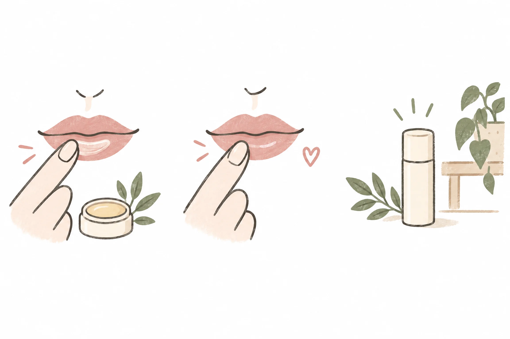

Cómo aplicarlo

- Con las manos limpias, pasá una capa delgada sobre los labios limpios y secos.
- Distribuí el producto sin frotar con fuerza. Si querés más cobertura, agregá otra capa fina.
- Reaplicalo cuando sientas que lo necesitás, o con la frecuencia que indique el envase.
Qué tener en cuenta
Revisá la lista de ingredientes si tenés sensibilidad conocida a algún componente. No compartas el aplicador y evitá usarlo sobre piel lastimada. Si notás picazón, ardor o irritación, dejá de aplicarlo.
Una aclaración sobre el sol
Un bálsamo labial no implica protección solar. Si necesitás protección frente al sol, elegí un producto que la indique expresamente y usalo según las instrucciones de su etiqueta.